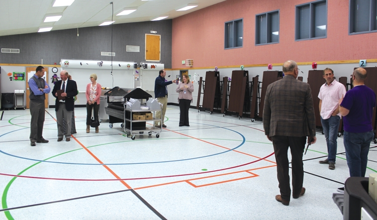

State legislators impressed with district
By Necia P. Seamons
Preston School District’s commitment to kids and technology was what Rep. Mark Gibbs and Sen. Mark Harris took from their visit to the Preston School District last week. “I’m floored with the technology that’s being incorporated into the classrooms, and how it is geared towards the kids and they are learning,” said Harris. Gibbs said he was impressed with the good condition of the district’s 79-year-old high school on one hand, and that the district’s commitment to being prepared for growth is evident, as well. In other words, the district has cared for the old building, but are not holding back on the opportunities for the future, they noted....continue to full article